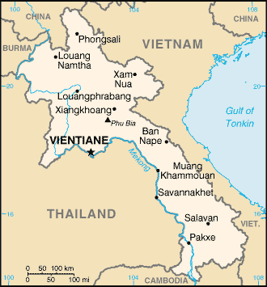

[Voir le carnet de route du Laos]
Itinéraire prévisionnel :
 Le plateau des Bolaven (sud du pays)
Le plateau des Bolaven (sud du pays)
 La piste Ho Chi Minh (près de la ville de Sépon)
La piste Ho Chi Minh (près de la ville de Sépon)
 La plaine des Jarres (ville de Phonsavan)
La plaine des Jarres (ville de Phonsavan)
 Luang Prabang
Luang Prabang
 Vientiane
Vientiane

Superficie : 236 800 km² (0,5 x la France)
Population : 5 403 000 habitants
Capitale : Vientiane
Population et ethnies : 68 familles ethniques. Les Laotiens se rangent eux-mêmes en quatre grandes catégories définies en fonction de l’altitude à laquelle ils vivent : 50% de Lao Loum (Lao "d’en bas") qui vivent en plaine ; 10 à 20% de Lao Thaï demeurant sur les versants des vallées fluviales ; 20 à 30% de Lao Theung résidant dans les basses montagnes ; et 10 à 20% de Lao Sung qui vivent en altitude
Langues : le Lao, et toute une série de dialectes laos, proches du Thaï, le Français
Religions : environ 85% de bouddhistes, 15% d’animistes
Institutions politiques : Régime de nature socialiste, proclamé en 1975, qui évolue très lentement. L’organe qui dirige le pays : le Parti révolutionnaire du peuple lao (qui comprend un politburo et un Comité central). Autres institutions étroitement dépendantes du Parti : le Conseil du gouvernement et l’Assemblée nationale.
Principales activités : l’agriculture, la pêche et la sylviculture occupent près de 80% de la population active. Parmi les cultures les plus importantes : le riz, le maïs, le blé, le coton, le tabac et le soja. L’exploitation du bois représente près du quart des exportations nationales. La mise en valeur des richesses du sous-sol laotien - étain, charbon, pétrole, etc. - vient tout juste de démarrer. Le tourisme a augmenté de 22% en 1999. Le Laos reste néanmoins l’un des pays les plus pauvres de la planète, l’un des plus subventionnés également. Depuis la crise asiatique, la monnaie laotienne, le kip, s’est effondrée. L’inflation est revenue brutalement, provoquant des tensions sociales.
Visa : avant d’y aller, 40 USD au Cambodge
Monnaie : le Kip (1€ = 9 975 Kip en 2004)
Budget quotidien : 14 à 20 US $/jour.
- Ambassade :
74 av. Raymond Poincaré, 75116 Paris.
Tél. : 01 45 53 02 98. Ouvert de 9h00 à 12h00 du lundi au vendredi. Attention, elle ne délivre pas toujours de visas pour les individuels (donc obligation de passer par une agence ou d’attendre d’être sur place). - Centre de documentation sur le Laos : 30 rue Boissière, 75016 Paris. Egalement 14 rue Dame-Genette, 57070 Metz.
Ambasssade de France :
| Adresse | Avenue Sethathirat, BP 6 |
| Ville | Vientiane |
| Téléphone | (856 21)21 52 53 & 21 52 57 à 59 |
| Fax | (856 21)21 52 50 |
| URL | http://www.ambafrance-laos.org |
Liste des médecins :
- Généraliste :
Ville : Vientiane
Nom : Dr Aziza et Dr Phathakhone
Adresse : -
Téléphone : 2152537-8 et 215619
Langues : Français et anglais
Commentaire : -
- Hôpital :
Ville : Vientiane
Nom : MAHOSOT Hospital
Adresse : Khao Not district
Téléphone : 21 40 18
Langues : Lao
Commentaire : Evitez d’y aller.... D’une façon générale, si vous avez le temps, faîtes-vous soigner en Thaïlande !
Ville : Vientiane
Nom : FRIENDSHIP Hospital
Adresse : Khao Not district
Téléphone : 41 33 06
Langues : -
Commentaire : Un chirurgien est français
Ville : Vientiane
Nom : Clinic PHATHANA
Adresse : -
Téléphone : 21 56 19
Langues : -
Commentaire : -
- Pharmacie :
Ville : Vientiane
Nom : Pharmalao
Adresse : -
Téléphone : 215 290
Langues : Lao
Commentaire : Tout n’y est probablement pas disponible
Ville : Vientiane
Nom : Kham Sa Ath
Adresse : -
Téléphone : 212 940
Langues : Lao
Commentaire : Vous n’êtes pas sur de tout y trouver...